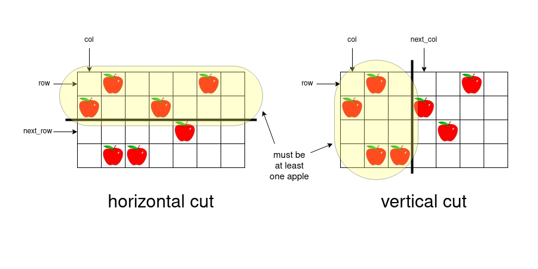

We highly recommend you solve the problem 304. Range Sum Query 2D - Immutable before trying this problem.
When one cuts a rectangular part of pizza either vertically or horizontally, the remaining part is also a rectangle but a smaller one. Since we give a person the left or the upper part of the pizza, we always keep the bottom right part of the pizza.
Because we have a smaller rectangle (pizza) after each cut, each cut creates a new subproblem. We will solve the problem using dynamic programming.
What will be the state of dynamic programming? Or in other words, how can we describe the current state of the pizza?
First, we need to know how many cuts are left to make. We will denote this number as remain.
Second, we need to know what part of the pizza remains on the table. Let row denote its topmost row, and col denote its leftmost column. The remaining part is pizza[row..rows-1][col..cols-1], where rows and cols denote the number of rows and columns in the original pizza respectively.
The state of the DP is the triplet (remain, row, col).
Let dp[remain][row][col] be the number of ways to cut the rectangular part pizza[row..rows-1][col..cols-1] with remain cuts modulo 109+710^9+7.
The base case of the DP is remain = 0 when one does not need to make any more cuts. If pizza[row..rows-1][col..cols-1] contains at least one apple, then dp[0][row][col] = 1 – there is one way to make no cuts and give the piece to the last person. Otherwise, pizza[row..rows-1][col..cols-1] contains no apples, and there are no ways to give the piece to the person, thus dp[0][row][col] = 0.
Now we need to write down the transitions of the DP.

When one cuts the rectangle pizza[row..rows-1][col..cols-1] horizontally, one first chooses the row next_row (row < next_row < rows) where to cut. The upper part after the cut will be pizza[row..next_row-1][col..cols-1] and the bottom one – pizza[next_row..rows-1][col..cols-1]. Since we give the upper part to a person, the number of apples on pizza[row..next_row-1][col..cols-1] must be greater than zero.
We can consider the vertical cut with the same logic: one first chooses the column next_col (col < next_col < cols) and cuts the pizza into two parts pizza[row..rows-1][cols..next_col-1] and pizza[row..rows-1][next_col..cols-1]. There must be at least one apple on pizza[row..rows-1][col..next_col-1].
Let's say we want to calculate dp[remain][row][col] with remain > 0.
We have to try all possible options for the first cut: the horizontal one at row next_row or the vertical one at column next_col. We iterate over all next_row such that row < next_row < rows. If pizza[row..next_row-1][col..cols-1] contains at least one apple, we can make the first cut into pieces pizza[row..next_row-1][col..cols-1] and pizza[next_row..rows-1][col..cols-1] and give the upper part to a person.
After this cut, we have to make remain - 1 cuts on the bottom part pizza[next_row..rows-1][col..cols-1]. Cutting the part pizza[next_row..rows-1][col..cols-1] with remain - 1 cuts is a subproblem. It means, there is a transition from dp[remain-1][next_row][col] to dp[remain][row][col].
Similarly, for all next_col such that col < next_col < cols, if we have at least one apple on pizza[row..rows-1][col..next_col-1] > 0, there is a transition from dp[remain-1][row][next_col] to dp[remain][row][col].
Having all transitions, one can conclude that the value dp[remain][row][col] equals the sum of dp[remain-1][next_row][col] and dp[remain-1][row][next_col] for all valid values of next_row and next_col.
We almost have the solution, but we haven't talked about how to quickly verify if a rectangle has an apple.
Let apples[row][col] denote the number of apples on pizza[row..rows-1][col..cols-1] (so apples[0][0] will be the number of apples on the original pizza).
The matrix apples is the cumulative region sum matrix. One can calculate this matrix using the reccurrence relation apples[row][col] = (pizza[row][col] == 'A') + apples[row + 1][col] + apples[row][col + 1] - apples[row + 1][col + 1]. Refer to Approach 4 of the solution of the problem 304. Range Sum Query 2D - Immutable for details.
Having the matrix apples one can find the number of apples on pizza[row..next_row-1][col..cols-1] as apples[row][col] - apples[next_row][col] and on pizza[row..rows-1][col..next_col-1] as apples[row][col] - apples[row][next_col]. For each cut, if the piece we are giving away has at least one apple, we can consider the cut.
apples[rows+1][cols+1] and dp[k][rows][cols].apples. Iterate row from rows-1 to 0.
col from cols-1 to 0.
apples[row][col] as (pizza[row][col] == 'A') + apples[row + 1][col] + apples[row][col + 1] - apples[row + 1][col + 1].apples[row][col] > 0, set dp[0][row][col] = 1, otherwise set dp[0][row][col] = 0 (the base case of the DP).remain from 1 to k - 1.
row from 0 to rows-1.
col from 0 to cols-1.
dp[remain][row][col] by considering all cuts.next_row from row+1 to rows-1.
apples[row][col] - apples[next_row][col] > 0, add dp[remain-1][next_row][col] to dp[remain][row][col].next_col from col+1 to cols-1.
apples[row][col] - apples[row][next_col] > 0, add dp[remain-1][row][next_col] to dp[remain][row][col].dp[k-1][0][0]. This represents the original pizza with k - 1 cuts, which is what the original problem is asking for.Javaclass Solution { public int ways(String[] pizza, int k) { int rows = pizza.length, cols = pizza[0].length(); int apples[][] = new int[rows + 1][cols + 1]; int dp[][][] = new int[k][rows][cols]; for (int row = rows - 1; row >= 0; row--) { for (int col = cols - 1; col >= 0; col--) { apples[row][col] = (pizza[row].charAt(col) == 'A' ? 1 : 0) + apples[row + 1][col] + apples[row][col + 1] - apples[row + 1][col + 1]; dp[0][row][col] = apples[row][col] > 0 ? 1 : 0; } } int mod = 1000000007; for (int remain = 1; remain < k; remain++) { for (int row = 0; row < rows; row++) { for (int col = 0; col < cols; col++) { for (int next_row = row + 1; next_row < rows; next_row++) { if (apples[row][col] - apples[next_row][col] > 0) { dp[remain][row][col] += dp[remain - 1][next_row][col]; dp[remain][row][col] %= mod; } } for (int next_col = col + 1; next_col < cols; next_col++) { if (apples[row][col] - apples[row][next_col] > 0) { dp[remain][row][col] += dp[remain - 1][row][next_col]; dp[remain][row][col] %= mod; } } } } } return dp[k - 1][0][0]; } }C++class Solution { public: int ways(vectorPython3& pizza, int k) { int rows = pizza.size(), cols = pizza[0].size(); vector apples(rows + 1, vector (cols + 1)); vector dp(k, vector(rows, vector (cols))); for (int row = rows - 1; row >= 0; row--) { for (int col = cols - 1; col >= 0; col--) { apples[row][col] = (pizza[row][col] == 'A') + apples[row + 1][col] + apples[row][col + 1] - apples[row + 1][col + 1]; dp[0][row][col] = apples[row][col] > 0; } } const int mod = 1000000007; for (int remain = 1; remain < k; remain++) { for (int row = 0; row < rows; row++) { for (int col = 0; col < cols; col++) { for (int next_row = row + 1; next_row < rows; next_row++) { if (apples[row][col] - apples[next_row][col] > 0) { (dp[remain][row][col] += dp[remain - 1][next_row][col]) %= mod; } } for (int next_col = col + 1; next_col < cols; next_col++) { if (apples[row][col] - apples[row][next_col] > 0) { (dp[remain][row][col] += dp[remain - 1][row][next_col]) %= mod; } } } } } return dp[k - 1][0][0]; } }; class Solution: def ways(self, pizza: List[str], k: int) -> int: rows = len(pizza) cols = len(pizza[0]) apples = [[0] * (cols + 1) for row in range(rows + 1)] for row in range(rows - 1, -1, -1): for col in range(cols - 1, -1, -1): apples[row][col] = ((pizza[row][col] == 'A') + apples[row + 1][col] + apples[row][col + 1] - apples[row + 1][col + 1]) dp = [[[0 for col in range(cols)] for row in range(rows)] for remain in range(k)] dp[0] = [[int(apples[row][col] > 0) for col in range(cols)] for row in range(rows)] mod = 1000000007 for remain in range(1, k): for row in range(rows): for col in range(cols): val = 0 for next_row in range(row + 1, rows): if apples[row][col] - apples[next_row][col] > 0: val += dp[remain - 1][next_row][col] for next_col in range(col + 1, cols): if apples[row][col] - apples[row][next_col] > 0: val += dp[remain - 1][row][next_col] dp[remain][row][col] = val % mod return dp[k - 1][0][0]
Let nn denote the number of rows in pizza and mm denote the number of columns in pizza.
Time complexity: O(k⋅n⋅m⋅(n+m))O(k \cdot n \cdot m \cdot (n + m)).
There are O(k⋅n⋅m)O(k \cdot n \cdot m) states [remain][row][col]. kk for remain, nn for row and mm for col. For each state, we iterate over next_row in O(n)O(n) and over next_col in O(m)O(m).
Space complexity: O(n⋅m⋅k)O(n \cdot m \cdot k).
We store the matrix dp[k][rows][cols].
Note that we calculate dp[remain] using only the values of dp[remain-1].
It allows us not to store all k "layers" in memory at once, but only two at a time to save space. We will keep two layers dp[remain-1] and dp[remain] in two matrices f (f[row][col] = dp[remain-1][row][col]) and g (g[row][col] = dp[remain][row][col]).
apples[rows+1][cols+1] and f[rows][cols].apples. Iterate row from rows-1 to 0.
col from cols-1 to 0.
apples[row][col] as (pizza[row][col] == 'A') + apples[row + 1][col] + apples[row][col + 1] - apples[row + 1][col + 1].apples[row][col] > 0, set f[row][col] = 1, otherwise set f[row][col] = 0 (the base case of the DP).remain from 1 to k - 1.
g[rows][cols] and initialize it with zeros. (Here f[row][col] = dp[remain-1][row][col] and g[row][col] = dp[remain][row][col]).row from 0 to rows-1.
col from 0 to cols-1.
next_row from row+1 to rows-1.
apples[row][col] - apples[next_row][col] > 0, add f[next_row][col] to g[row][col].next_col from col+1 to cols-1.
apples[row][col] - apples[row][next_col] > 0, add f[row][next_col] to g[row][col].g to f.f[0][0].
Java
class Solution {
public int ways(String[] pizza, int k) {
int rows = pizza.length, cols = pizza[0].length();
int apples[][] = new int[rows + 1][cols + 1];
int f[][] = new int[rows][cols];
for (int row = rows - 1; row >= 0; row--) {
for (int col = cols - 1; col >= 0; col--) {
apples[row][col] = (pizza[row].charAt(col) == 'A' ? 1 : 0) + apples[row + 1][col] + apples[row][col + 1]
- apples[row + 1][col + 1];
f[row][col] = apples[row][col] > 0 ? 1 : 0;
}
}
int mod = 1000000007;
for (int remain = 1; remain < k; remain++) {
int g[][] = new int[rows][cols];
for (int row = 0; row < rows; row++) {
for (int col = 0; col < cols; col++) {
for (int next_row = row + 1; next_row < rows; next_row++) {
if (apples[row][col] - apples[next_row][col] > 0) {
g[row][col] += f[next_row][col];
g[row][col] %= mod;
}
}
for (int next_col = col + 1; next_col < cols; next_col++) {
if (apples[row][col] - apples[row][next_col] > 0) {
g[row][col] += f[row][next_col];
g[row][col] %= mod;
}
}
}
}
// copy g to f
f = Arrays.stream(g).map(int[]::clone).toArray(int[][]::new);
}
return f[0][0];
}
}
C++
class Solution {
public:
int ways(vector& pizza, int k) {
int rows = pizza.size(), cols = pizza[0].size();
vector apples(rows + 1, vector(cols + 1));
vector f(rows, vector(cols));
for (int row = rows - 1; row >= 0; row--) {
for (int col = cols - 1; col >= 0; col--) {
apples[row][col] = (pizza[row][col] == 'A') + apples[row + 1][col] +
apples[row][col + 1] - apples[row + 1][col + 1];
f[row][col] = apples[row][col] > 0;
}
}
const int mod = 1000000007;
for (int remain = 1; remain < k; remain++) {
vector g(rows, vector(cols));
for (int row = 0; row < rows; row++) {
for (int col = 0; col < cols; col++) {
for (int next_row = row + 1; next_row < rows; next_row++) {
if (apples[row][col] - apples[next_row][col] > 0) {
(g[row][col] += f[next_row][col]) %= mod;
}
}
for (int next_col = col + 1; next_col < cols; next_col++) {
if (apples[row][col] - apples[row][next_col] > 0) {
(g[row][col] += f[row][next_col]) %= mod;
}
}
}
}
f = g;
}
return f[0][0];
}
};
Python3
class Solution:
def ways(self, pizza: List[str], k: int) -> int:
rows = len(pizza)
cols = len(pizza[0])
apples = [[0] * (cols + 1) for row in range(rows + 1)]
for row in range(rows - 1, -1, -1):
for col in range(cols - 1, -1, -1):
apples[row][col] = ((pizza[row][col] == 'A')
+ apples[row + 1][col]
+ apples[row][col + 1]
- apples[row + 1][col + 1])
f = [[int(apples[row][col] > 0) for col in range(cols)]
for row in range(rows)]
mod = 1000000007
for remain in range(1, k):
g = [[0 for col in range(cols)] for row in range(rows)]
for row in range(rows):
for col in range(cols):
for next_row in range(row + 1, rows):
if apples[row][col] - apples[next_row][col] > 0:
g[row][col] += f[next_row][col]
for next_col in range(col + 1, cols):
if apples[row][col] - apples[row][next_col] > 0:
g[row][col] += f[row][next_col]
g[row][col] %= mod
f = g
return f[0][0]
Let nn denote the number of rows in pizza and mm denote the number of columns in pizza.
Time complexity: O(k⋅n⋅m⋅(n+m))O(k \cdot n \cdot m \cdot (n + m)).
There are O(k⋅n⋅m)O(k \cdot n \cdot m) states [remain][row][col]. kk for remain, nn for row and mm for col. For each state, we iterate over next_row in O(n)O(n) and over next_col in O(m)O(m).
Space complexity: O(n⋅m)O(n \cdot m).
We store the matrices apples[rows+1][cols+1], f[rows][cols] and g[rows][cols].